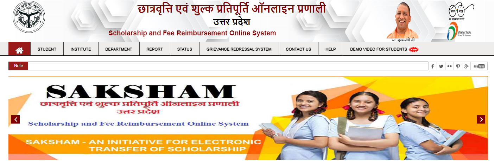
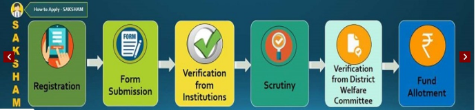

UP Scholarship 2021-22: The scholarships in UP are intended for students who are a member of the learning system of the northern state which claims more than 2 lakh schools and around 60 universities. Strived at contributing financial backing to students at various levels of education in the state, the UP scholarship carries multiple pre-matric and post-matric plans for SC/ST/OBC/Minority/General category students.
यूपी छात्रवृत्ति 2021-22: यूपी में छात्रवृत्ति का उद्देश्य उन छात्रों के लिए है जो उत्तरी राज्य के शिक्षण प्रणाली के सदस्य हैं जो 2 लाख से अधिक स्कूलों और लगभग 60 विश्वविद्यालयों का दावा करते हैं। राज्य में शिक्षा के विभिन्न स्तरों पर छात्रों को वित्तीय सहायता प्रदान करने के प्रयास में, यूपी छात्रवृत्ति अनुसूचित जाति / अनुसूचित जनजाति / अन्य पिछड़ा वर्ग / अल्पसंख्यक / सामान्य श्रेणी के छात्रों के लिए कई प्री-मैट्रिक और पोस्ट-मैट्रिक योजनाएं चलाती है।
Apart from, the key characteristic of the scholarship application, the Scholarship UP gateway also allows the candidates to examine the status of the applied scholarship. Whether you are a new candidate or applying for a comeback, you can pursue your application request online by its dedicated online arrangement. While the fresh candidates can simply log in to the dashboards to check current application status and the existing users can seek their previous year’s application through the “Status” section.
You can also find more Scholarship Articles for 12th passed, 10th passed Students and many more.
If Students forgot registration number of up scholarship 2021 they can visit the official website to rest their new login id and password. We will discuss here the importance of each UP scholarship checking including the application procedure, eligibility criteria, rewards, etc. Candidates can check here and seek their dream academic profession with these UP accomplishments.
इसके अलावा, छात्रवृत्ति आवेदन की प्रमुख विशेषता, छात्रवृत्ति यूपी प्रवेश द्वार भी उम्मीदवारों को लागू छात्रवृत्ति की स्थिति की जांच करने की अनुमति देता है। चाहे आप एक नए उम्मीदवार हैं या वापसी के लिए आवेदन कर रहे हैं, तो आप अपनी समर्पित ऑनलाइन व्यवस्था द्वारा अपना आवेदन अनुरोध ऑनलाइन कर सकते हैं। जबकि ताजा उम्मीदवार वर्तमान आवेदन स्थिति की जांच करने के लिए केवल डैशबोर्ड में प्रवेश कर सकते हैं और मौजूदा उपयोगकर्ता “स्थिति” खंड के माध्यम से अपने पिछले वर्ष के आवेदन की तलाश कर सकते हैं।
हम यहां प्रत्येक यूपी छात्रवृत्ति के महत्व पर चर्चा करेंगे जिसमें आवेदन प्रक्रिया, पात्रता मानदंड, पुरस्कार आदि शामिल हैं। उम्मीदवार यहां देख सकते हैं और इन यूपी उपलब्धियों के साथ अपने सपनों के अकादमिक पेशे की तलाश कर सकते हैं।
UP Scholarship Time Table has been released
UP Scholarship Pre matric correction window started on October 16, 2019. Candidates can make the corrections on the application form till October 25, 2019, on the official site at http://scholarship.up.nic.in
Direct Link to Apply Online for UP Scholarship 2021
- Apply Online (Fresh/Renewal)
- Login for Complete Form (Fresh/ Renewal)
- Download Notification Pre-Matric | Post Matric
UP Scholarship Check Status | यूपी छात्रवृत्ति स्थिति
Candidates, who have successfully applied for the UP Scholarship and filled the application form along with the needed documents can check the status of the application for the scholarship provided by Uttar Pradesh Board, from time to time, on the university website.
With this, they will be able to track the advancement of their application and can get an approach if they will get the scholarship or not. All they have to do is, use their registration ID and password and submit the details to check the UP Scholarship status 2020. Check the table below for detailed information;
उम्मीदवार, जिन्होंने यूपी छात्रवृत्ति के लिए सफलतापूर्वक आवेदन किया है और आवश्यक दस्तावेजों के साथ आवेदन पत्र भरा है, उत्तर प्रदेश बोर्ड द्वारा प्रदान की गई छात्रवृत्ति, समय-समय पर, विश्वविद्यालय की वेबसाइट पर आवेदन की स्थिति की जांच कर सकते हैं।
इसके साथ, वे अपने आवेदन की उन्नति को ट्रैक करने में सक्षम होंगे और एक दृष्टिकोण प्राप्त कर सकते हैं कि क्या उन्हें छात्रवृत्ति मिलेगी या नहीं। उन्हें बस इतना करना है कि अपनी पंजीकरण आईडी और पासवर्ड का उपयोग करें और विवरण जमा करने के लिए यूपी छात्रवृत्ति स्थिति 2019 की जांच करें। विस्तृत जानकारी के लिए नीचे दी गई तालिका देखें;
| Description | Links |
| UP Scholarship Status Through Bank Account Number PFMS | Click Here |
| Check Pre-Matric Scholarship Status (Available For All Students) |
Fresh | Renewal |
| Check Post Matric Inter Scholarship Status (Available for few students) |
Fresh | Renewal |
| Check Post Matric Scholarship Status (Other Than Inter) (Available for few students) |
Fresh | Renewal |
| Check Post Matric Scholarship Status (Other State Student) (Available for few students) |
Fresh | Renewal |
UP Scholarship 2021-22
Every year UP scholarship schemes is announced for the students who want to seek the accomplishment for their higher education. The dates to apply for the scholarship are mentioned in the below table. The dates specified are applicable only for the scholastic year 2021. It may vary every year on the responsibility of the scholarship organizing committee. UP scholarship, online process and UP Scholarship registration start from 1st August 2021. UP Scholarship last date to apply is November 2021.
हर साल यूपी छात्रवृत्ति योजनाओं की घोषणा उन छात्रों के लिए की जाती है जो अपनी उच्च शिक्षा के लिए उपलब्धि चाहते हैं। छात्रवृत्ति के लिए आवेदन करने की तारीखें नीचे दी गई तालिका में उल्लिखित हैं। निर्दिष्ट तिथियां केवल शैक्षिक वर्ष 2021-22 के लिए लागू हैं। यह छात्रवृत्ति आयोजन समिति की जिम्मेदारी पर हर साल भिन्न हो सकता है। यूपी छात्रवृत्ति, ऑनलाइन प्रक्रिया और यूपी छात्रवृत्ति पंजीकरण 1 अगस्त 2021 से शुरू होता है। यूपी छात्रवृत्ति आवेदन करने की अंतिम तिथि 12 नवंबर 2021 है।
| Particulars | Post-Matric Class 11-12 | Pre Matric Class 9-10 |
| Application Starts | August | August |
| Last date of the UP Application form | November | October |
| Last Date of Complete Form | November | October |
| Last Date of Submitting hard copy to Institute | November | October |
| Correction Date (Institute Forward) | December | November |
| Scholarship Money Distribution Date from District |
January | January |
UP Scholarship Eligibility Criteria | यूपी छात्रवृत्ति पात्रता मापदंड
Now, as you are informed of all the list UP scholarships, let us know further the respective eligibility criteria. Every scholarship has its own eligibility criteria but there is one criterion, which each scholarship has stated, which is, candidates need to be permanent residents of UP state and should have a domicile certificate along with them.
Now let us check the academic qualifications and family income for all the category students required as per the eligibility criteria defined by the conducting organization.
अब, जैसा कि आपको सभी सूची यूपी छात्रवृत्ति के बारे में बताया गया है, आइए आगे संबंधित पात्रता मानदंड के बारे में जानें। प्रत्येक छात्रवृत्ति की अपनी पात्रता मानदंड है लेकिन एक मानदंड है, जिसे प्रत्येक छात्रवृत्ति ने कहा है, जो, उम्मीदवारों को यूपी राज्य का स्थायी निवासी होना चाहिए और उनके साथ एक अधिवास प्रमाण पत्र होना चाहिए।
अब आइए हम सभी योग्य छात्रों के लिए शैक्षणिक योग्यता और परिवार की आय की जाँच करें जो कि आयोजन संगठन द्वारा परिभाषित पात्रता मानदंड के अनुसार आवश्यक हैं।
- Domicile in Uttar Pradesh.
- Enrolled with School, College, Institute or University.
- Pre Matric Class 9: Passed Class 8 Exam and Enrolled in Class 9.
- Pre Matric Class 10: Passed Class 9 Exam and Enrolled in Class 10.
- Post Matric 11: Passed Class 10 Exam and Enrolled in Class 11.
- Post Matric 12: Passed Class 11 Exam and Enrolled in Class 12.
- Dashmottar: Enrolled in any UG, PG, Diploma Certificate Examination.
Pre-matric Scholarship Uttar Pradesh for ST/SC/General Category
- Students of class 9th and 10th who belong to SC/ST/General category are eligible for this scholarship
- The annual salary of the house should not be beyond Rs. 1 Lakh.
Pre-Matric Scholarship Uttar Pradesh for Minorities
- Students who are belonging to the minority category and studying at graduation, postgraduation, Ph.D. or higher level, are eligible for this scholarship.
- The annual salary of the house should not be beyond Rs. 2 Lakh from all sources.
Pre-Matric Scholarship Uttar Pradesh for OBC Students
- Students belonging to the OBC category and studying in classes IXth and Xth are eligible for this scholarship.
- The annual salary of the house should not be beyond Rs. 1 Lakh from all sources.
Post matric Intermediate Scholarship, Uttar Pradesh for ST/SC/General Category
- Students belonging to SC/ST/General category and are studying in classes 11 and 12 are eligible for this scholarship.
- The annual salary of the house should not be beyond Rs. 2 Lakh (for General candidates) and Rs. 2.5 Lakh (for SC/ST candidates) from all sources.
Post matric Other State Scholarship, Uttar Pradesh for ST, SC, General Category
- Students belonging to SC/ST/General category and are studying in class 11th or above, are eligible for this scholarship.
- The annual salary of the house should not be beyond Rs. 2 Lakh (for General candidates) and Rs. 2.5 Lakh (for SC/ST candidates) from all sources.
Post matric Intermediate Scholarship, Uttar Pradesh for Minorities
- Students belonging to the minority community and are studying in class 11th and 12th, are eligible for the scholarship.
- The annual salary of the house should not be beyond Rs. 2 Lakh from all sources.
Post matric Intermediate Scholarship, Uttar Pradesh for OBC Students
- Students belonging to the OBC category and studying in class 11thand 12th are eligible for this scholarship.
- The annual salary of the house should not be beyond Rs. 2 Lakh from all sources.
Post matric (Other than Intermediate) Scholarship, Uttar Pradesh for ST, SC, General Category
- Students belonging to SC/ST/General category and are studying at graduation, post-graduation, Ph.D. or higher level, are eligible for this scholarship.
- The annual salary of the house should not be beyond Rs. 2 Lakh (for General candidates) and Rs. 2.5 Lakh (for SC/ST candidates) from all sources.
Post matric (Other Than Intermediate) Scholarship, Uttar Pradesh for OBC
- Students belonging to the OBC category and studying at graduation, postgraduation, Ph.D. or higher level are eligible for the scholarship.
- The annual salary of the house should not be beyond Rs.2 Lakh from all sources.
Post-Matric (Other Than Intermediate) Scholarship, Uttar Pradesh for Minorities
- Students belonging to the minority community and are studying at graduation, post-graduation, Ph.D. or higher level, are eligible for this scholarship.
- The annual salary of the house should not be beyond Rs. 2 Lakh from all sources.
TCS Internship is hosted by Tata Consultancy Services for some of the brightest graduate, post-graduate students.
UP Scholarship Application Procedure – How To Apply?
जैसा कि आपने पहले ही छात्रवृत्ति की सूची और उनके पात्रता मानदंड की जानकारी दे दी है, अब इसकी आवेदन प्रक्रिया से संबंधित जानकारी एकत्र करने का समय है। यूपी छात्रवृत्ति फॉर्म केवल ऑनलाइन उपलब्ध होगा। आइए अब नीचे दिए गए इन चरणों का पालन करके यूपी छात्रवृत्ति के लिए आवेदन करने का तरीका देखें।
As you have already given the information on the list of scholarship and their eligibility criteria, now its time to collect the information regarding its application process. UP Scholarship Form will be available online only. Let us now check how to apply for UP scholarships by following these steps given below.

- Visit the official website http://scholarship.up.nic.in/
- Click on the “Student” section and choose “New Registration”.

- Pick the scholarship for which you need to apply.
- Fill in all the necessary details.
- Click on the “Submit” button to register.
- Take the printout of the registration slip for later reference.
- Once registered, click on the “Student” section and choose the “Fresh Login” option for new applications and the “Renewal Login” choice for renewal applications as per the scholarship.
- Log in with your registration number, date of birth and password.
- You will be directed to a webpage comprising important instructions about form filling.
- Read all instructions thoroughly and tick the box given at the end of the page and click “Proceed”.
- The minute you click on the “Proceed” button, you will be directed to the user dashboard.
- Click on the “Fill in application form” part.
- Fill in additional details in the scholarship application form.
- Click on the submit button.
- Once you click on submit after finishing the application form, you need to upload your photograph and other supporting documents.
- Before heading towards the final submission of the application form, the candidates are suggested to go through every detail filled carefully to avoid any sort of error afterward. Also, there is no requirement of making changes to the information filled by the candidate, once finally submit the application form.
- After the final submission of the application form, the candidates are asked to take the printout of the form and submit it along with other supporting documents to their respective educational institutions.
Documents Required for Application Process
For Fresh Candidates
- Last Qualifying Exam Mark Sheet
- Category Certificate
- Family Income Certificate
- Bank Passbook
- Fee Receipt Number
- Annual Non Refundable Amount
- Enrollment Number
- Student ID Proof
- Domicile Certificate
- Aadhar Card Number
- Latest Passport Size Photograph
For Renewal Candidates: Kindly Use Last Year Registration Number to log in to Renewal Section and Enter the Fresh Details.
List of UP Scholarships
Let us discuss here, the list of UP Scholarships, who provide these scholarships, when to apply for it, etc. in this section. Check the table below for further details.
| Name of the Scholarship | Name of the scholarship provider | Application Duration |
| Pre-matric Scholarship For ST/SC/General Category, Uttar Pradesh | Social Welfare Department, Government of Uttar Pradesh | July – September |
| Pre-Matric Scholarship for Minorities, Uttar Pradesh | Minority Department, Government of Uttar Pradesh | July – September |
| Pre-Matric Scholarship for OBC Students, Uttar Pradesh | Backward Class Welfare Department, Government of Uttar Pradesh | July – September |
| Post matric Intermediate Scholarship For ST/SC/General Category, Uttar Pradesh | Social Welfare Department, Government of Uttar Pradesh | July – November |
| Post matric Other State Scholarship for ST, SC, General Category, Uttar Pradesh | Social Welfare Department, Government of Uttar Pradesh | July – November |
| Post matric (Other than Intermediate) Scholarship for ST, SC, General Category, Uttar Pradesh | Social Welfare Department, Government of Uttar Pradesh | July – November |
| Post matric (Other Than Intermediate) Scholarship for Minorities, Uttar Pradesh | Minority Department, Government of Uttar Pradesh | July – November |
| Post matric Intermediate Scholarship for OBC Students, Uttar Pradesh | Backward Class Welfare Department, Government of Uttar Pradesh | July – November |
| Post matric Intermediate Scholarship for Minorities, Uttar Pradesh | Minority Department, Government of Uttar Pradesh | July – November |
| Post matric (Other Than Intermediate) Scholarship for OBC, Uttar Pradesh | Backward Class Welfare Department, Government of Uttar Pradesh | July – November |
Important Instructions for UP Scholarship
- UP scholarship is fairly available for all the candidates belonging to any of the categories such as General, OBC, SC, ST.
- Applicants from those institutes, which are blacklisted by the government, are not eligible to apply for the scholarship. These barred colleges include Chaudhary Babulal Institute of Technology and Management, Hathras, Excellence College of Professional Studies, Meerut and Shri Krishna College of Engineering and Technology, Baghpat.
- It is necessary for students to attach a hardcopy of the photocopy of the bank passbook with the application form.
- Registrants must submit the application form in the department concerned, in person and must receive the receipt.
- Candidates must provide their own effective email ID and mobile phone number.
- All the details and documents produced by the candidate must be authentic and real. If the given information is obtained wrong, then the application and data collected will be rejected.
- Suspect applications will not be sent for scholarship and will be discarded at the same time.
- Failed students are not eligible and should not apply for the scholarship.
- Candidates who have applied for the scholarship or willing to apply are suggested to not share their individual details, bank account number, IFSC code, class 10th/12th roll number, password, and other delicate information to anyone.
- Candidates can review their application status from time to time on the official website.
- Candidates are required their ID and password produced at the time of application to see the scholarship status.
- Candidates, those who are already enrolled with the portal have to renew the account by adding the updates. No new registration is required.
- UP Scholarship renewal status can check on through online by visiting the web portal of UP Scholarship login
- All updates regarding the scholarship are updated on the official portal in a regular interval of time. Candidates are requested to stay in contact for regular updates.
- Candidates are suggested to check the scholarship updates on the portal on a regular basis. They must obey all the instructions timely and carefully so that they cannot miss the chance to get the scholarship.
UP Scholarship – Rewards | यूपी छात्रवृत्ति पुरस्कार
The amount of financial assistance that a student can receive under UP scholarship and the expenses that can be covered with the help of these scholarships are mentioned in this section. Even, the conditions on the basis of which the awards are decided are covered in this section. The financial service provided to students majorly depends on your individual financial need. Also, there are some scholarships that recognize educational merit for the disbursal of scholarships. Moreover, the amount of scholarship that the students will receive is given in the table below.
एक छात्र को यूपी छात्रवृत्ति के तहत मिलने वाली वित्तीय सहायता की राशि और इन छात्रवृत्ति की मदद से खर्च किए जा सकने वाले खर्च का उल्लेख इस खंड में किया गया है। यहां तक कि, जिन स्थितियों के आधार पर पुरस्कार तय किए जाते हैं, वे इस खंड में शामिल हैं। छात्रों को प्रमुख रूप से प्रदान की जाने वाली वित्तीय सेवा आपकी व्यक्तिगत वित्तीय आवश्यकता पर निर्भर करती है। इसके अलावा, कुछ छात्रवृत्तियाँ हैं जो छात्रवृत्ति के संवितरण के लिए शैक्षिक योग्यता को मान्यता देती हैं। इसके अलावा, छात्रों को मिलने वाली छात्रवृत्ति की मात्रा नीचे दी गई तालिका में दी गई है।
| Name of the Scholarship | Rewards |
| Pre-matric Scholarship For ST/SC/General Category, Uttar Pradesh | Variable financial award |
| Pre-Matric Scholarship for Minorities, Uttar Pradesh | Variable financial award |
| Pre-Matric Scholarship for OBC Students, Uttar Pradesh | Variable financial award |
| Post matric Intermediate Scholarship For ST/SC/General Category, Uttar Pradesh | Variable financial award |
| Post matric Other State Scholarship for ST, SC, General Category, Uttar Pradesh | Variable financial award |
| Post matric (Other than Intermediate) Scholarship for ST, SC, General Category, Uttar Pradesh | Variable financial award |
| Post matric (Other Than Intermediate) Scholarship for Minorities, Uttar Pradesh | Variable financial award |
| Post matric Intermediate Scholarship for OBC Students, Uttar Pradesh | Variable financial award |
| Post matric Intermediate Scholarship for Minorities, Uttar Pradesh | Variable financial award |
| Post matric (Other Than Intermediate) Scholarship for OBC, Uttar Pradesh | Variable financial award |
UP Scholarship – Statistics for Last Year Session
Here is the UP scholarship statistics as of 12th December 2019. It shows the number of students who have enrolled in a particular category, finally submitted application and number of applications forwarded by the institution.
| Session- 2018-19 | No.of registrations – Final Submitted | Forwarded by Institution |
| Pre-matric class 9-10 | 3225859 – 2467862 | 2135536 |
| Post-matric class 11-12 | 2780783 – 2288898 | 2288898 |
| Post-matric other than 11-12 | 5348273 – 4172117 | 3707253 |
| Total | 11354935 – 8928877 | 7854843 |
UP Scholarship Contact Details
- UP Scholarship Customer Care Phone Number: 0522-2209270, 0522-2288861, 0522-2286199
- UP Scholarship Toll-free Number: 18001805131 (Backward Class Welfare), 18001805229 (Minority Welfare)
FAQ’s on UP Scholarship
Question 1.
What is the UP scholarship?
Answer:
UP scholarship promotes the education of students who are day scholars in Uttar Pradesh (UP). Both pre-matric and post-matric scholarships are accessible for students belonging to SC/ ST/ OBC/ General categories. The scholarships covered under this parasol are offered by the Minority Welfare Department, Backward Classes Welfare Department, Tribal Welfare Department, and Samaj Kalyan Vibhag.
प्रश्न 1
यूपी छात्रवृत्ति क्या है?
उत्तर:
यूपी छात्रवृत्ति उत्तर प्रदेश (यूपी) में छात्रों की शिक्षा को बढ़ावा देती है। प्री-मैट्रिक और पोस्ट-मैट्रिक दोनों छात्रवृत्ति अनुसूचित जाति / अनुसूचित जनजाति / अन्य पिछड़ा वर्ग / सामान्य श्रेणियों के छात्रों के लिए सुलभ हैं। इस छत्र के अंतर्गत आने वाली छात्रवृत्ति अल्पसंख्यक कल्याण विभाग, पिछड़ा वर्ग कल्याण विभाग, आदिम जाति कल्याण विभाग और समाज कल्याण विभागा द्वारा दी जाती है।
Question 2.
How much amount of financial support is given to the students under the UP scholarship scheme?
Answer:
The UP government does not define the amount of scholarship it will provide to scholars. The scholarship amount changes based on the class and category to which the learners belong.
प्रश्न 2
यूपी छात्रवृत्ति योजना के तहत छात्रों को कितनी वित्तीय सहायता दी जाती है?
उत्तर:
यूपी सरकार छात्रवृत्ति प्रदान करने वाली छात्रवृत्ति की मात्रा को परिभाषित नहीं करती है। छात्रवृत्ति राशि वर्ग और श्रेणी के आधार पर बदल जाती है जिससे शिक्षार्थी संबंधित होते हैं।
Question 3.
How can I Apply for UP Scholarship?
Answer:
The applications for all UP scholarships can be filled online through its Scholarship and Fee Reimbursement Online System named ‘Saksham’.
प्रश्न 3
यूपी छात्रवृत्ति के लिए आवेदन कैसे करें?
उत्तर:
सभी यूपी छात्रवृत्ति के लिए आवेदन पत्र अपनी छात्रवृत्ति और शुल्क प्रतिपूर्ति ऑनलाइन प्रणाली के माध्यम से ऑनलाइन भरे जा सकते हैं, जिसका नाम। साक्षाम ’है।
Question 4.
Is UP scholarship available for only UP board students?
Answer:
Candidates studying at any recognized school/college/institution in UP can apply for the scholarships.
प्रश्न 4
UP Scholarship Status 2021 कैसे चेक करें?
उत्तर:
यूपी स्कालरशिप 2021-22 स्टेटस चेक करने के लिये छात्रवृत्ति एवं शुल्क प्रतिपूर्ति ऑनलाइन प्रणाली की वेबसाइट पर लॉगिन करना होगा।